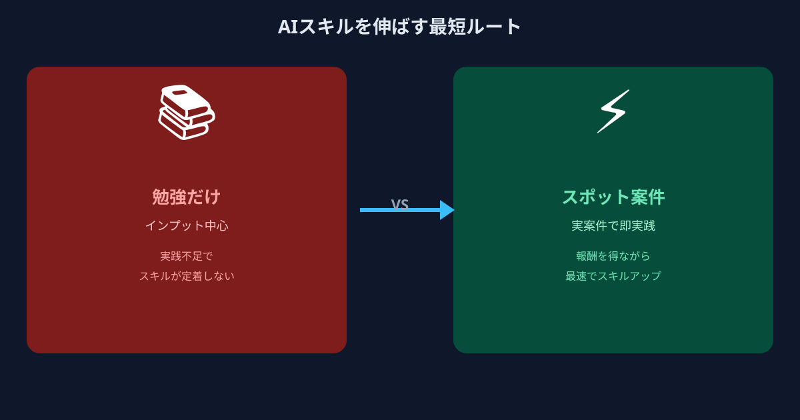
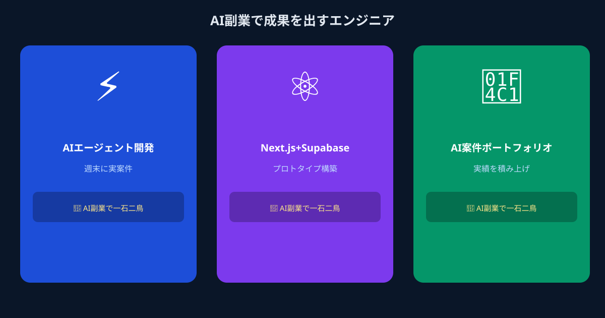

「本業だけ」では置いていかれる？ 2026年のエンジニアが直面するAIスキルギャップ
ChatGPTの登場から約3年。LLMを活用したサービス開発は、いまやスタートアップから大手企業まで当たり前の選択肢になりました。LLM APIの組み込み方、RAG（検索拡張生成）による社内ドキュメントとの連携、さらにはAI Agentの設計など、2026年現在では「生成AI対応のエンジニア」であることが、市場価値を左右する要素のひとつになっています。
問題は、多くのエンジニアの本業環境がこのスピードに追いついていないことです。既存サービスの保守・運用が主な業務で、AI開発に触れる機会が社内にない。「次のプロジェクトではAIを使うかも」と言われ続けて1年が経った——こういった話は、決して珍しいことではありません。
技術トレンドを追うブログを読んだり、ハンズオンの勉強会に参加したりして情報はキャッチしている。でも「知っている」と「作れる」の間には、依然として大きな溝があります。この溝を埋めるには、実際に動くプロダクトを作る経験を積むしかありません。
勉強だけでは埋まらない。実践の場こそがAIスキルを伸ばす最短ルート
「Udemyを買った」「個人開発でChatGPT APIを触った」——これらが無意味とは言いません。しかし、本当に市場価値につながるAIスキルは、「誰かのビジネス要件を解決するための実装」を繰り返すことで磨かれます。個人学習と実案件では、求められる思考の深さがまったく異なります。
実案件では、「どのモデルをどのコンテキストで使い分けるか」「ハルシネーションをどう抑制するか」「コストと精度のトレードオフをどう設計するか」といった、実用上の判断力が試されます。これらは教材では学べず、実際に依頼者がいる状況でプロダクトを動かして初めて身につくスキルです。
- 要件が曖昧なビジネス課題をAI活用可能な形に整理するプロセス
- LLM API / RAG / Agentを組み合わせて動くシステムに落とし込む経験
- 非エンジニアの依頼者にアウトプットを説明し、フィードバックを受けて改善するサイクル
「実践の場が必要なのはわかる。でも副業で案件を受けると、長期コミットで本業に支障が出るのでは？」——そう心配する方に知ってほしいのが、週1日・タスク単位で参加できるAI副業という選択肢です。
AI案件×スポット副業が「一石二鳥」である理由

従来の副業案件は、月20〜40時間のコミットが求められる長期契約が主流でした。しかし近年、「AIプロトタイプを1〜2週間で作ってほしい」「週1回のMTGと実装を半月だけお願いしたい」というスポット・タスク単位の依頼が企業側から増えています。開発のスコープが明確で、生成AIを使えば短期間で成果を出しやすい案件が多いことが、このトレンドを後押ししています。
ANKENでは、こうしたスポット・マイクロコミット案件を専門に扱っており、メガベンチャーや大手IT出身のエンジニアが本業の傍ら無理なく稼働できる設計になっています。
メリット① 実際の案件でしか身につかないAI実装力が手に入る
スポット副業で受けられるAI案件の多くは、企業が「試作品を作りたい」「PoC段階のツールを動かしたい」という明確なゴールを持っています。このフェーズの案件は、フルスクラッチの大規模開発とは異なり、スコープが絞られており、短期間で完結します。
問い合わせ自動応答ボット、社内ドキュメントのRAG検索、データを自然言語で集計するSQL生成ツール——こういった案件を一本こなすたびに、LLM API活用の引き出しが増えます。半年で3〜5本のスポット案件を経験したエンジニアと、個人学習のみのエンジニアでは、実装の引き出しに大きな差が生まれます。副業を「実践トレーニングの場」と捉えると、案件のたびに学習コストがゼロになると考えることもできます。
メリット② 週1日・タスク単位から始められる最小コミット設計
「副業を始めたいが、本業が忙しくなったときに断れるか不安」という声はよく聞きます。ANKENのスポット発注モデルでは、依頼単位がタスク・期間で明確に設定されており、「この週末だけ」「このタスクだけ」という範囲を事前に合意した上で始められます。
長期契約のように「毎月稼働時間を確保しなければならない」というプレッシャーがなく、本業のピーク期間は稼働を止め、余裕がある時期に再開するという柔軟なスタイルが可能です。実際に、四半期末は本業に集中し、それ以外の週末だけスポット案件を受けているというエンジニアも少なくありません。始めるハードルを最小化しているのが、マイクロ・マッチング型副業の最大の特徴です。
メリット③ 副業収入が「学習コストのゼロ化」を実現する
UdemyやAI勉強会への参加は、時間と場合によっては費用が発生します。一方、スポット副業でAI案件を受けると、スキルを磨きながら報酬を得ることができます。学習コストがプラスに転じる構造です。
さらに、副業で得た収入をAPIの実験環境や開発ツールへの投資に回すことで、スキルアップのサイクルを加速することもできます。「稼ぎながら学ぶ」という考え方は、個人投資家が「運用しながら市場を学ぶ」ことに似ています。座学ではなく実戦から最速で成長したいエンジニアにとって、スポット副業は理にかなったキャリア戦略です。
こんなエンジニアがAI副業で成果を出しています

どんなエンジニアが、どんな形でAI副業を活用しているか、具体的なシーンをご紹介します。
社内システムの保守・運用が主業務で、生成AIに触れる機会がなかった。ANKENで問い合わせ対応ボットのPoCを週末2回で担当したことをきっかけに、LLM API・プロンプト設計・エラーハンドリングのノウハウを実案件で習得。3ヶ月後には社内のAI活用プロジェクトのリードを任されるようになった。
フロントエンドが専門で、バックエンドとのAI連携部分に苦手意識があった。スポット案件でPythonベースのRAGシステムの実装に参加し、LangChainとベクターDBの扱いを実務レベルで習得。副業収入は月2〜3万円程度でも、「履歴書に書けるAI実装経験」としての価値は大きかったと語る。
生成AIの知識はあったが、副業案件の探し方が分からずにいた。ANKENに登録後、タスク単位で複数のAI案件を掛け持ち。得意のフルスタック力を活かして、フロントからAPI連携まで一気通貫で担当できるため単価が高く、土日のみの稼働で月10万円超の副収入を継続している。
よくある質問
- Q. 本業を続けながらAIスキルは伸ばせますか？
- A. 伸ばせます。週1のスポット案件でLLMやRAG、Agent開発を実践しながら学ぶのが最短ルートです。
- Q. 勉強だけでは不十分ですか？
- A. 独学だけでは実務レベルのスキルは身につきにくく、実案件での経験が習得の近道になります。
- Q. 副業で成果を出しているのはどんなエンジニアですか？
- A. 本業で基礎スキルを持ちながら、週末や夜の時間でAI案件に継続的に取り組んでいるエンジニアです。
まとめ
2026年のエンジニア市場において、「生成AIを実務で使いこなせる」かどうかは、本業の評価にも転職市場での価値にも直結する時代になっています。しかし、その実践力は本業の業務環境だけで身につくとは限りません。
AI案件をスポット副業として受けることは、収入と実践的なスキルアップを同時に実現する、現役エンジニアにとって最もコストパフォーマンスの高いキャリア投資のひとつです。週1日から、土日だけから、タスク1本からでも始められるのがANKENのマイクロ・マッチングの強みです。
「どんな案件があるか見てみたい」「自分のスキルセットで受けられる案件はあるか？」——まずは登録して、実際の案件を確認することから始めてみてください。
メガベンチャー・大手IT所属のフルスタックエンジニア歓迎。生成AI・LLM・RAG対応の実案件を、スポット・タスク単位でご紹介します。
👉 AI副業案件を確認して、エンジニア登録してみる登録費用・固定費ゼロ。週1日・土日のみでもOK。